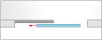
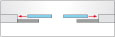
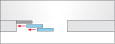
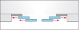
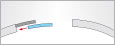
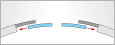

Автоматичні двері
Автоматичні двері широко використовуються у приміщеннях із великим потоком людей. Це може бути торговий центр, аеропорт, станція, офісні центри і т.д. Встановлюючи двері такого роду в будинках, в яких протягом дня проходить велика кількість людей, традиційно хочуть досягти 2 цілей:
- збільшити термін служби дверного блоку
- зберегти більше тепла у приміщенні
Для цих завдань існує 5 підвидів автоматичних дверей: плоскі, телескопічні, радіуси, кутові, багатофункціональні. Давайте розберемося, що являє собою кожен з цих видів.
- Висока шумо- та теплоізоляція
- Невисока ціна
- Довговічність
- Висока пропускна здатність
- Відсутність "мертвих зон"
- Не можна герметично закрити отвір
- Виникнення протягів
- Неможливість встановлення у вузькому отворі

Плоскі автоматичні двері
Плоскі двері – це класика спектру автоматичних розсувних дверей. Вони ідеально підходять для установки в будь-якому місці, де є достатньо простору для їхнього відкривання. Установка таких дверей дозволяє автоматизувати вхід просто та елегантно. Дверні стулки відкриваються у напрямку від відвідувачів, що значно підвищує рівень безпеки.
Спеціальні області застосування
- Протипожежні та димозахисні двері
- Запасні та аварійні виходи
- Протизламні двері з різними класами захисту
- Не піддаються корозії та водонепроникні двері
- Скляні двері
Додаткові функції
- Функція шлюзу: два двері, що працюють в єдиній системі, забезпечують контроль доступу
- Контроль доступу: керується за допомогою ключа, проксіміті-карти, системи відеоспостереження та біометричних даних
- Екстренне блокування шляхом натискання тривожної кнопки, двері негайно зачиняються та блокуються
- Автоматизація будівлі: інтеграція до існуючої системи управління будівлею
{kind=link}
Варіанти відкриттів
Двері (ширина проходу 800-2000 мм)
Двостулкові двері (ширина проходу 1100-3000 мм)
{kind=link}
Варіанти відкриттів
Двері (ширина проходу 700-3800 мм)
Двостулкові двері (ширина проходу 1400-3800 мм)
Телескопічні автоматичні двері
Телескопічні розсувні двері використовуються переважно у випадках, коли необхідно забезпечити максимальну ширину відкривання при обмеженому прорізі.
Спеціальні області застосування
- Запасні та аварійні виходи
Радіусні автоматичні двері
Радіусні розсувні двері покликані підкреслити особливі форми в архітектурі і з першого погляду акцентують увагу відвідувачів на стилі та формі. Вся вхідна група завдяки радіусним дверям пропускає на 40% більше світла в порівнянні з плоскими розсувними дверима.
Спеціальні області застосування
- Запасні та аварійні виходи
- Цілоскляні двері
{kind=link}
Варіанти відкриттів
Двері (ширина проходу 800-2000 мм)
Двостулкові двері (ширина проходу 1100-3000 мм)
{kind=link}
Кутові автоматичні двері
Кутові розсувні двері – це ідеальне рішення для оптичної виразності сучасної будівлі. Кут може бути спрямований усередину будівлі або назовні, так чи інакше, за допомогою кутових розсувних дверей Ви зможете створити надзвичайно елегантну та привабливу вхідну групу.
Спеціальні області застосування
- Цілоскляні двері
Багатофункціональні автоматичні двері
Як видно з назви, багатофункціональні розсувні двері покликані виконувати цілий ряд завдань. Кожні автоматичні двері приваблюють перехожих та відвідувачів своєю надзвичайною зручністю. В екстрених випадках або у разі великого потоку відвідувачів (наприклад, під час концерту), двері швидко та надійно забезпечують вільний прохід завдяки функції «Антипаніка». Можливо також закрити окремі дверні стулки для захисту від небажаних відвідувачів.
Спеціальні області застосування
- Будинки, комплекси та установи, для яких існує підвищений ризик злому, наприклад, ювелірні магазини, магазини на заправних станціях, торгові організації, виставкові центри
Двері "Антипаніка"
Всі дверні стулки автоматичних евакуаційних дверей можуть бути відкриті вручну з будь-якого положення, тим самим миттєво забезпечуючи максимальну ширину проходу для евакуації. Поряд із стандартними функціями безпеки, передбачені додаткові захисні заходи, наприклад, технологічні зазори, продиктовані вимогами безпеки, або закруглений переріз профілів - для запобігання защемленню пальців у дверях. Якщо всі дверні стулки повністю відкриті і зсунуті до країв отвору, ширина проходу досягає 95 відсотків від загальної ширини отвору, що було б можливе лише у разі відсутності дверей як такої.
- Ширина проходу до 2300 мм
- Висота проходу до 2500 мм
{kind=link}
{kind=link}
Антивандальні (протизламні) двері
Протизламні двері - це автоматичні розсувні двері, що забезпечують максимальний захист від злому та вандалізму. У цих дверях Мі передбачили спеціальні конструктивні особливості, ось лише деякі з них: найжорстокіша система алюмінієвих профілів, ущільнювачі зі спеціального матеріалу з клиноподібною формою, спеціально розроблена концепція болтових з'єднань. І, зрозуміло, протиударні двері забезпечують повний комфорт та звичну функціональність автоматичних розсувних дверей.
- Ширина проходу до 2900 мм
- Висота проходу до 2500 мм
- Підтверджені класи захисту: WK2 та WK3, відповідно до нормативу ENV 1627
- Напрямна, монтується в підлогу
- Механічний замок у підлогу
Замовити автоматичні двері
Розглянувши кожен вид автоматичних дверей, можна сказати, що це надійне рішення для вхідної групи, де є великий потік людей. Ми пропонуємо замовити встановлення автоматичних дверей у нас, і Ви отримаєте високу якість конструкції, яка виконуватиме свої завдання на всі 100%.